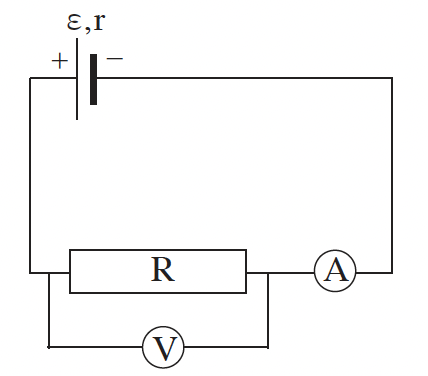
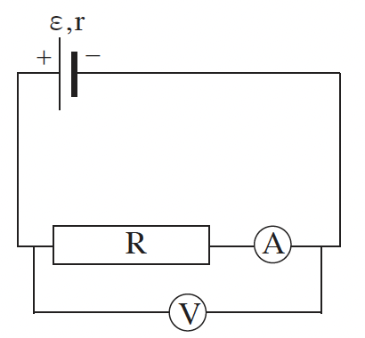

שאלה 2
תלמידה הרכיבה שני מעגלים חשמליים הכוללים מרכיבים זהים: סוללה בעלת כא"מ ε והתנגדות פנימית r,
נגד משתנה R, מד מתח V ומד זרם A (ראו תרשים א ותרשים ב).


התלמידה הרכיבה במעגלים מד זרם שאינו אידיאלי. קבעו אם המתח הנמדד בשני המעגלים שווה או שונה. אם המתח הנמדד שווה - הסבירו מדוע. אם המתח הנמדד שונה - קבעו באיזה מעגל הוא גדול יותר, והסבירו מדוע.
(8 נקודות)
התלמידה החליפה את מד הזרם במעגל המתואר בתרשים א, במד זרם אידיאלי. היא ערכה ניסוי שבו שינתה כמה פעמים את ההתנגדות של הנגד המשתנה. תוצאות הניסוי מוצגות בטבלה שלפניכם.
| 0.6 | 0.5 | 0.4 | 0.3 | 0.2 | I(A) |
|---|---|---|---|---|---|
| 0 | 0.20 | 0.36 | 0.60 | 0.79 | V(V) |
שרטטו גרף של המתח כפונקציה של עוצמת הזרם, לפי המדידות של התלמידה.
(7 נקודות)
התבססו על הגרף, וחשבו את הכא"מ (ε) ואת ההתנגדות הפנימית (r) של הסוללה.
(8 נקודות)
האם יש דרך למדוד ישירות (ללא חישוב) כא"מ של סוללה? אם כן - הסבירו כיצד. אם לא - הסבירו מדוע.
(4 נקודות)
האם יש דרך למדוד ישירות (ללא חישוב) התנגדות פנימית של סוללה?
אם כן - הסבירו כיצד. אם לא - הסבירו מדוע.
(6.33 נקודות)